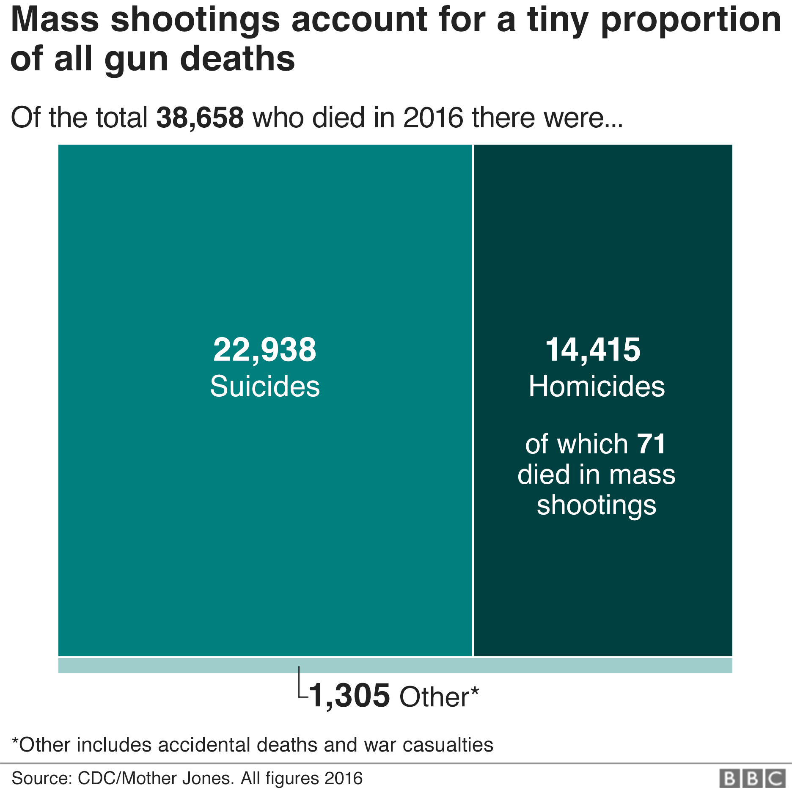

Gun Violence Mapped: Interactive Mapping of Four Datasets
STATEMENT OF USE of MAP --- FOUR VIEWS.
Click on a state to explore STATE-level data and use the slider to see how rates have changed over time.
Show Mass Shooting Events
Deaths per % of population
population
Static Views: Four Organizations Representations of Gun Violence
ONE: thetrace.org Mapping of 150,000 shootings over five years

TWO: nytimes.com Images of Mass Shootings Favorite Weapons
THREE: bbc.com America's Gun Culture in Charts

FOUR: mhanational.org The State of Mental Health in America

Today's News:
Headline One:
Headline Two:
Headline Three:
Headline Four:
Conclusions: What We Now Think
Beth's Summary
"THIS IS A PLACE HOLDER FOR TEXT OR LINK."
Carol'S Summary
Gun violence was not an easy topic for learning or expressing what I have learned while researching the topic. Guns and violence bring out strong emotions and evoke a strong undercurrent of fear in daily society that was emphasized while working on this project. I believed prior to working on this topic that a multi-faceted approach is the only way bring a solution. I still believe any solution must include a reduction in the power of the NRA to control our society and our officials, improved mental health care access for all, reduced racial and economic disparities and improved "common sense" gun controls that reduce the ability of desperate people to have access to guns when what they need is help. Learnings from the project are: Data is never easy but it is enlightening, you can learn a lot from simple google searches and breaking down tasks into the smallest bit possible.
Enzo'S Summary
"THIS IS A PLACE HOLDER"
Ian'S Summary
"THIS IS A PLACE HOLDER"
References and Inspirations: Who We Are and What We Used
We Are:
Our team included: Beth Grace, Carol Pietro Kadish, Enzo Adriano and Ian Valentik
Can we say a sentence about each of us?
Resources Used:
Static View 1: The TraceStatic View 2: New York Times
Static View 3: The BBC
Static View 4: Mental Health Association
Technology Used:
"We used javascript as our primary application with HTML and CSS. We "